Para trabajar este tema, es fundamental tomar como referente el término Manual, donde la Real Academia de la Lengua lo define, Manual, Libro en que se compendia lo más sustancial de una materia., aunque nosotros no hablamos de materia, como tal, este término si es aplicado a nuestro Sistema de Información, “Compendio de lo más sustancial de nuestro sistema de información” En este objeto de Aprendizaje se relacionaran algunos de los aspectos básicos que se deben tener en cuenta al momento de construir el manual de Usuario y el manual técnico.
Este manual busca explicar detalladamente cada una de las acciones que se pueden realizar en la página o plataforma, es un manual muy gráfico, con una estructura de un fácil comprender; lo cual lo hace fácil para los “usuarios finales” de la aplicación. Se espera respuestas todas y cada una de las incógnitas del lector para que al final el usuario logre manejar la aplicación correctamente.
Realizar un documento que sirva de guía al usuario, mediante el cual se muestren las diferentes funcionalidades de la página o plataforma para que este logre ser manipulado correctamente.
son todos los elementos que hacen parte del sistema, en cuanto al hardware encontramos lo que son (Servidores,computadores, cluster,impresoras etc) y en cuanto al software son los bienes inmateriales que proporcionan datos e instrucciones.
En este espacio se indicarán que tipo de conocimientos previos requieren los usuarios, como son algunos de los que se listan a continuación:
° Informatica básica.
° Manejo de Email y contraseña.
° Conocer las politicas de seguridad de la institucion, por ejempo:
las políticas de ingreso, validación de usuarios y manejo de contraseñas. Estos también se pueden estructurar por perfiles de usuario.
Es necesario indicar las especificaciones técnicas del hardware y software que se deben utilizar para que el sistema funcione adecuadamente, estas especificaciones ya fueron definidas en los documentos de diseño y validadas posteriormente durante el proceso de construcción de la aplicación.
En cuanto al Hardware se puede hacer uso del aplicativo con los siguientes requisitos:
° Procesador intel atom N2600 x 64bits.
° Disco duro de 500gb expandible.
° Memoria ram de 4gb instalada.
° Windows 10.
° Conexión de red (10 Mbs o superior).
En cuanto a los requerimientos de Software, la plataforma se encontrará situada en un host el cual se encargará de mantenerla en funcionalidades activas, para el almacenamiento de datos, toda la información se encuentra en el gestor de base de datos PostgreSQL.
Para el manejo del Host; será usado por medio de heroku, el cual se encargará de mantener los servidores en línea.
Al momento de ingresar, lo primero que se mostrará, es el área de inicio de sección. Cuenta con dos campos, el primero es el campo de “Email” en el cual se debe ingresar el correo con el cual fue registrado, el segundo es el campo de “Password” en el cual se debe ingresar la contraseña que se le fue asignada previamente.
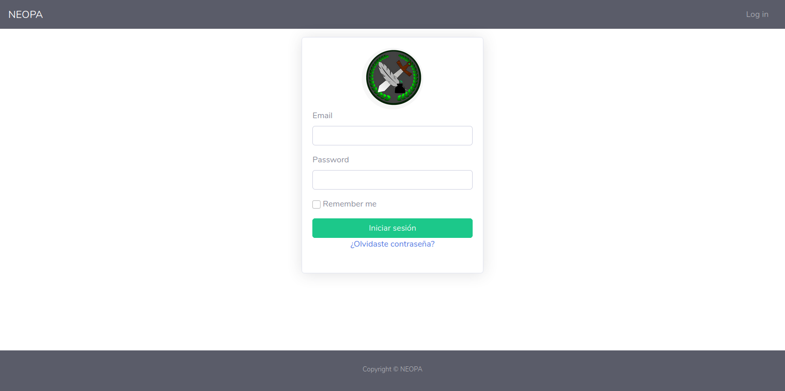Una vez haya validado sus datos de usuario, se procederá a mostrar la pagina de inicio, en la cual podrá visualizar los campos habilitados para su rol (Admin, Docente, Usuario).
Mediante sidebar, dándole clic al aparto de “Registro” se puede redireccionarse a (Cursos, Usuarios y Roles).
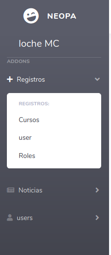Interfaz de cursos; en esta interfaz se verán reflejados los cursos que ya fueron creados. Dando clic en los botones (Registrar curso, Mostrar y Editar) se habilitan los siguientes campos.
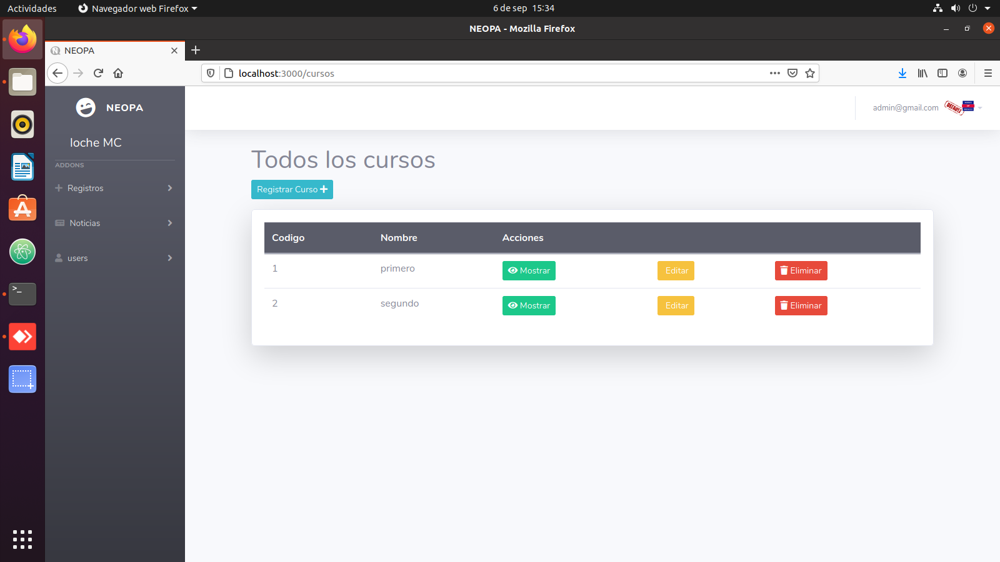(Registrar Curso). Esta interfaz cuanta con 3 campos (Codigo, Nombre y Users); en el campo de “Codigo” se le asigna un numero con el cual se le identificará, en el campo de “Nombre” se le dispondrá a nombrase dicho curso y por ultimo se encuentra el campo de los “Users”, en esta opción se pueden asignar alumnos (los cuales no pertenezcan algún otro curso) al curso que se está creando.
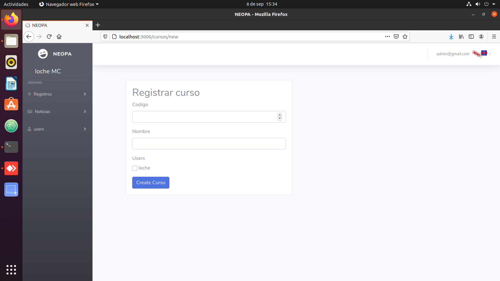(Mostrar). Esta interfaz solo muestra los datos básicos del curso, como lo son “Código y Nombre”; el apartado que dice “Cursos” regresa a la interfaz de cursos.
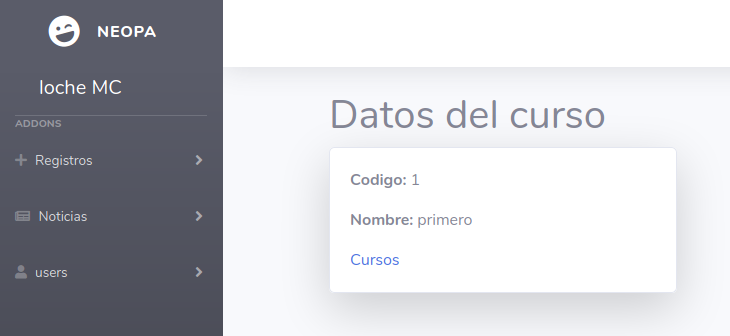Interfaz de roles; en esta interfaz se verán reflejados los roles que ya fueron creados.
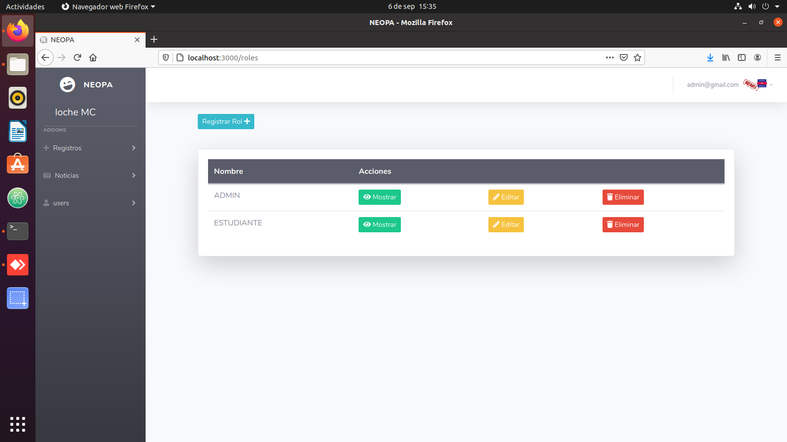Interfaz registro de roles; en esta interfaz se otorga un espacio mediante el cual la persona (admin) pueda crear roles.
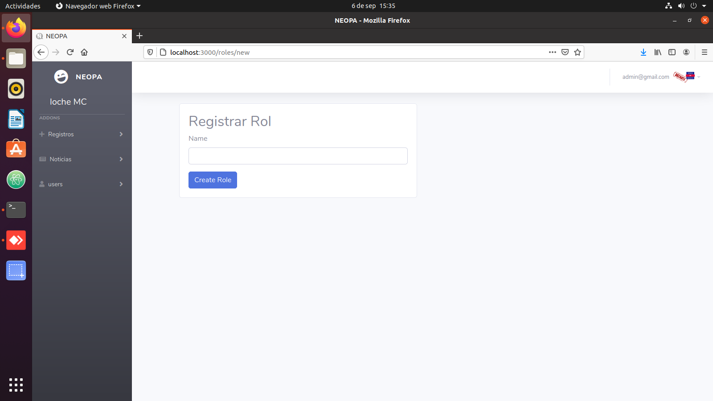(Sidebard) Apartado de Noticias.
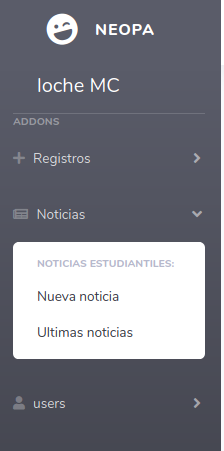Interfaz de creación de noticias; en esta interfaz se encuentra un pequeño formulario en el cual se puede crear una noticia (incluye opción para agregar archivos).
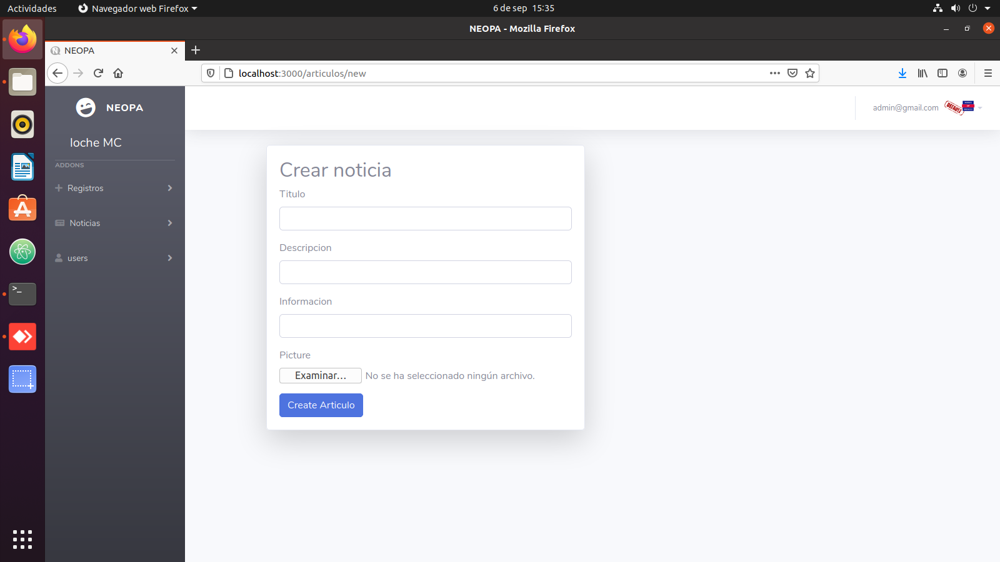Y en esta interfaz se verán reflejadas las noticias.
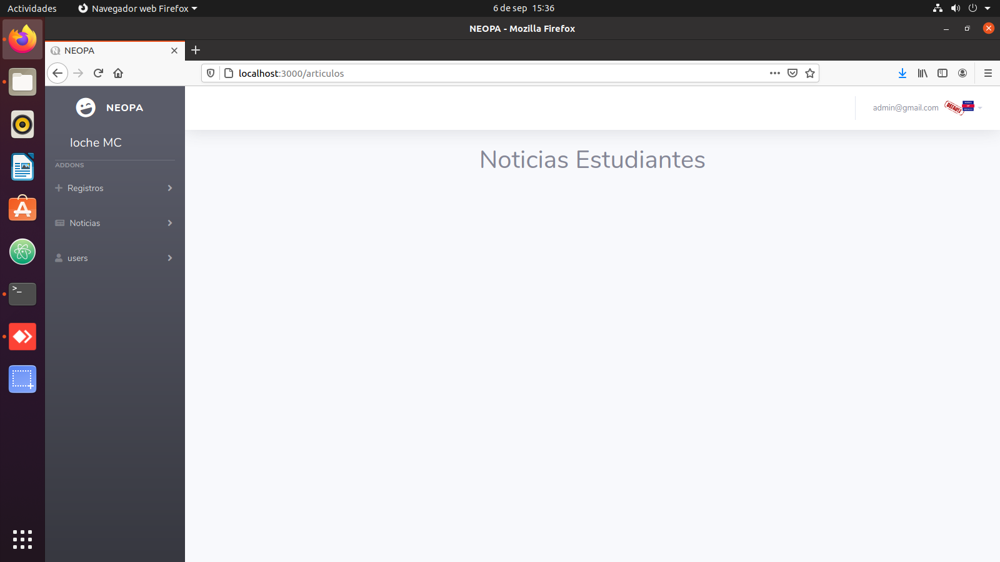Interfaz de registro de usuarios; esta interfaz cuenta con un formulario más completo, por el cual un usuario (admin) puede crear más usuarios y asignarles sus respectivos roles.
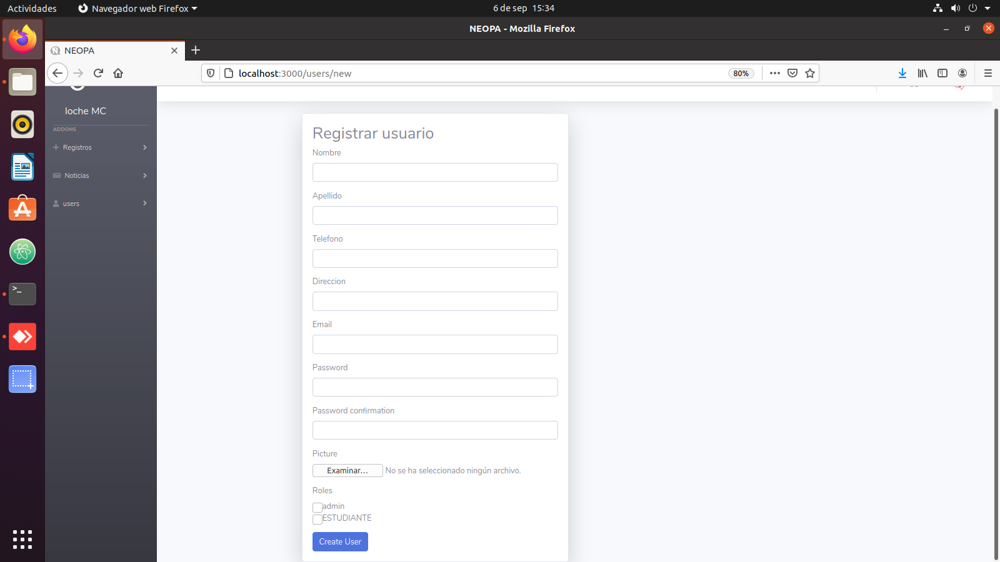Interfaz de docentes; en esta interfaz se verán reflejados los docentes que ya fueron registrados.
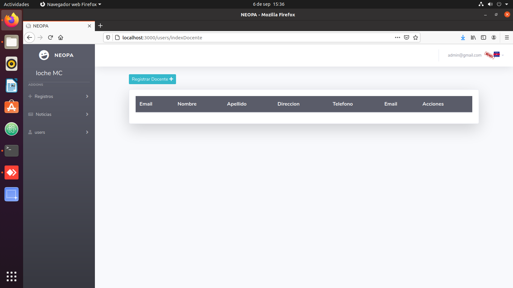Interfaz de estudiantes; en esta interfaz se verán reflejados los estudiantes que ya fueron registrados.
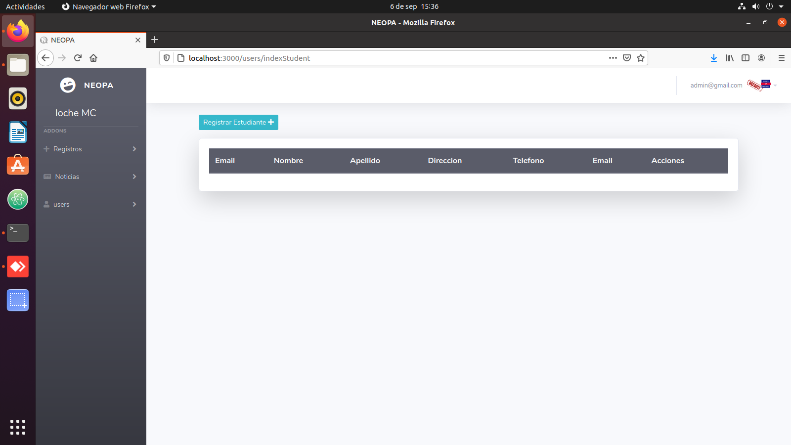